Поворот фордевинд (Halsen) означает прохождение кормой через ветер.
Сначала уваливаются (abfallen) до тех пор, пока лодка не пойдёт точно по ветру (Vor dem Wind). Гика-шкот (Großschot) соответственно потравливают (auffieren). Затем шкот равномерно выбирают (dichtholen), пока гик (Baum) не встанет по центру. Руль (Ruder) медленно и мягко перекладывают настолько, чтобы гик перешёл на другой борт сам. Теперь молниеносно потравливают шкот. Он должен немедленно отдаться при нагрузке. Рулевой (Steuermann) при команде «Через корму!» (Rund achtern!) должен быть готов к тому, что перебрасывающийся грот (Großsegel) мгновенно создаст резкий момент вращения в сторону нового наветренного борта (Luv). Если в этот момент не дать контрруль (Stützruder), лодка с ещё выбранным гика-шкотом окажется поперёк ветра. Центробежная сила усилит крен (Krängung), и лодка может опрокинуться (kentern). Обязательно держать лодку по ветру, пока гика-шкот на новой подветренной стороне (Lee) не будет полностью потравлен в положение фордевинд. Только после этого можно привестись (anluven), соответственно выбрать шкот и лечь на желаемый курс.
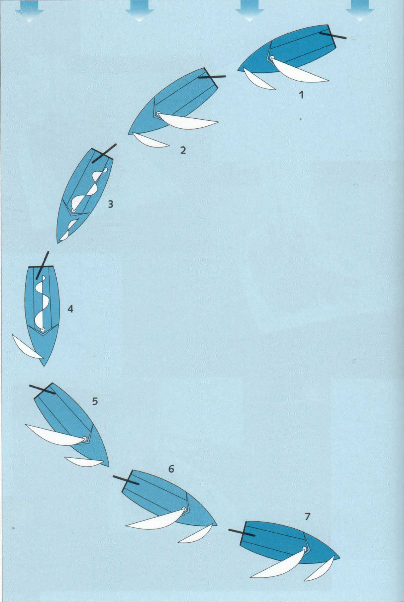
|
Таблица команд — поворот фордевинд (Kommandotafel Halsen) |
|
К повороту фордевинд товсь! (Klar zum Halsen!) Есть товсь! (Ist klar!) Потравить шкоты! (Fier auf die Schoten!) Выбрать гика-шкот! (Hol dicht die Großschot!) Через корму! (Rund achtern!) Потравить гика-шкот! (Fier auf die Großschot!) Выбрать шкоты на …-й ветер! (Hol an die Schoten ...Wind!) |
1 Полный курс (Raumschots-Kurs) левым галсом (Backbord-Bug). Рулевой сидит с наветренной стороны, шкотовый (Vorschoter) обеспечивает баланс веса.
2 Гика-шкот потравлен, рулевой зажимает румпель (Pinne) между ногами и начинает выбирать гика-шкот.
3 Лодка набирает ход, быстро выбирать гика-шкот и продолжать уваливаться...
4 ... сесть и подготовиться к контррулю. Стаксель (Fock) переходит на другой борт.
5 Через корму! Гик перебрасывается, быстро потравить гика-шкот и дать контрруль против резкого приведения.
6 Гика-шкот потравлен, давление на румпель скомпенсировано.
7 Новый курс: бакштаг (Raumer Wind) правым галсом (Steuerbord-Bug).
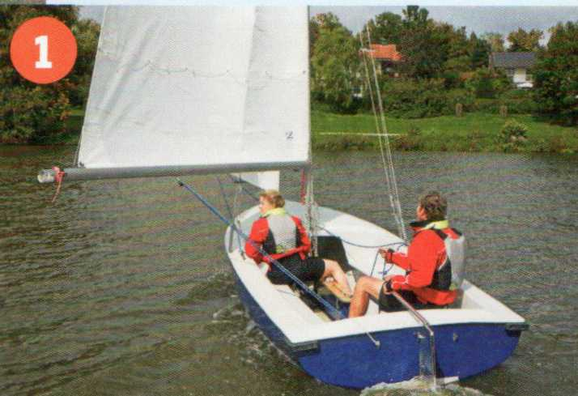
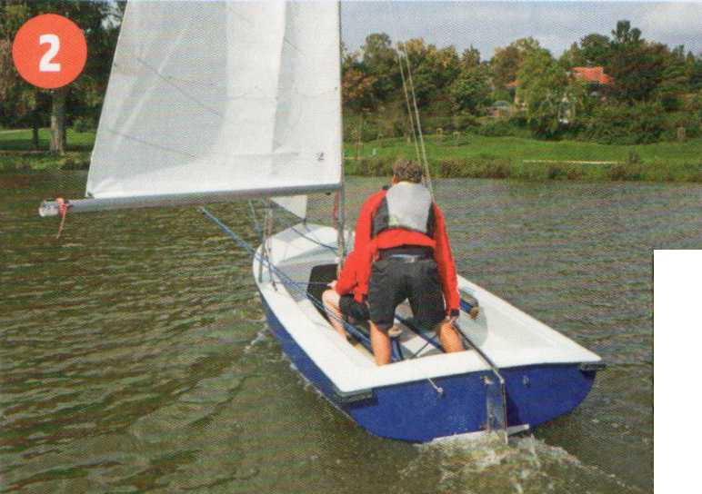
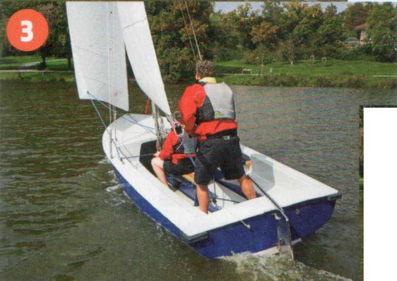
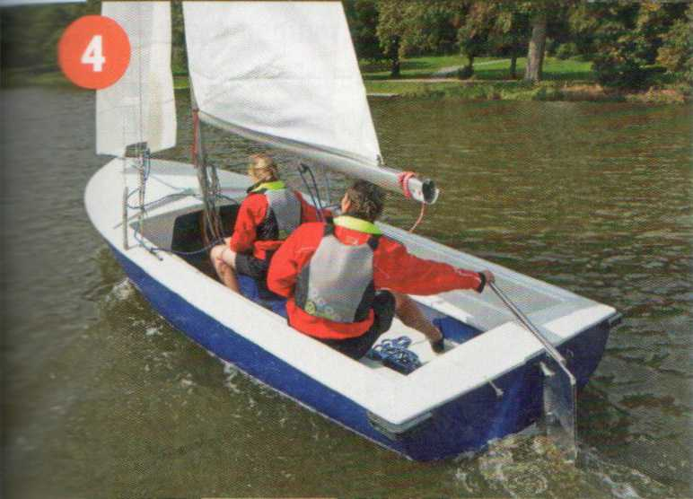
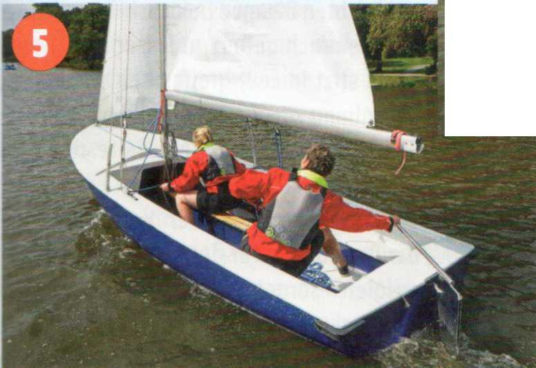
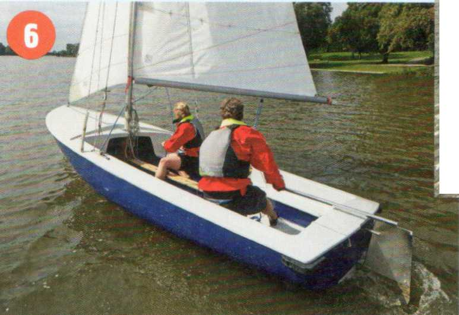
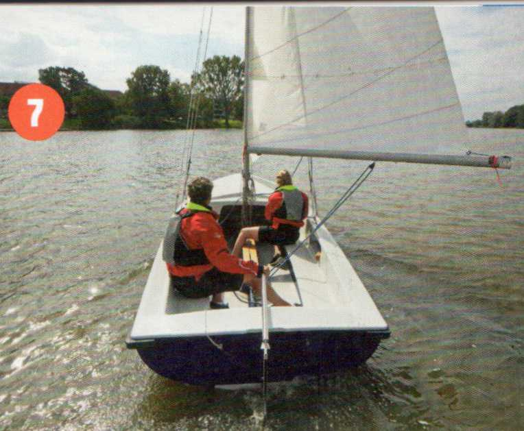
Регатным поворотом фордевинд называют способ на швертботах (Jollen) и малых килевых яхтах (Kielbooten) с лёгкими гиками при перебрасывании (Schiften) оставлять гика-шкот потравленным. Рулевой сидит с подветренной стороны (Lee), берёт шкот сверху рукой и с небольшим разгоном перекидывает парус на другую сторону. Контрруль, конечно, и здесь забывать нельзя. Шкотовый, кроме того, должен обеспечивать правильный баланс веса.
Регатный поворот фордевинд применим только при слабом ветре и рассчитан на опытных яхтсменов.
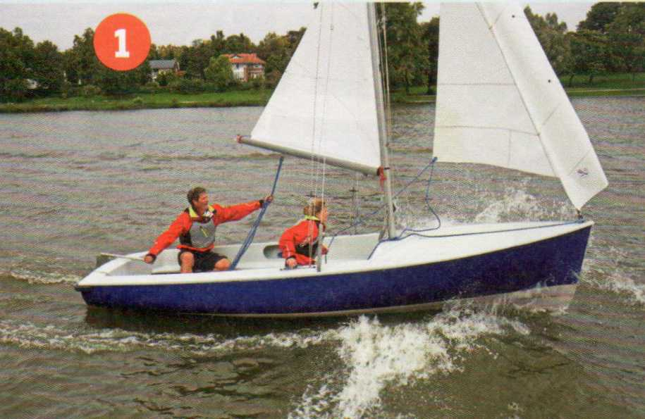
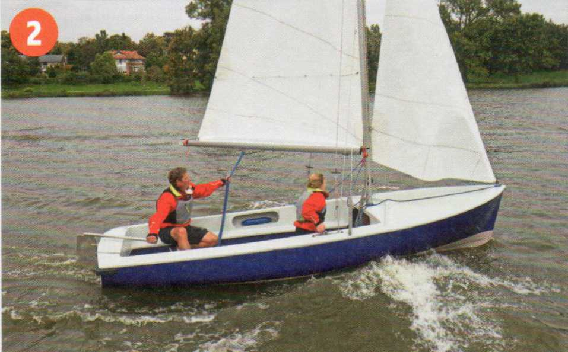
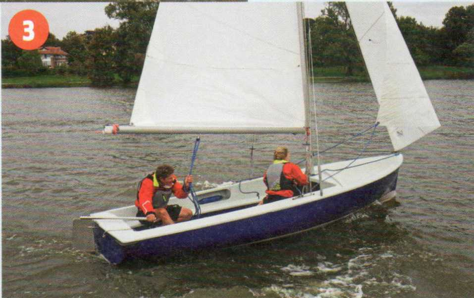
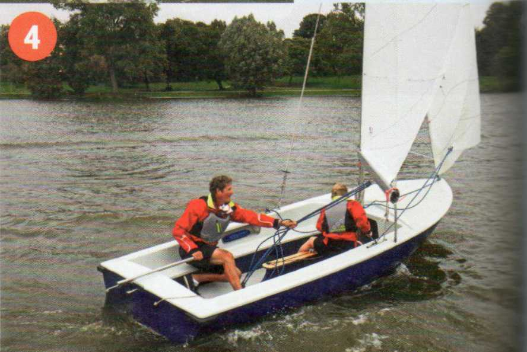
1 Смена позиции на полном курсе, переложить руль, взять гика-шкот...
2 ...шкотовый на швертовый колодец (Schwertkasten)...
3 ... перебросить стаксель и контролируемо...
4 ...перекинуть грот на новый подветренный борт, не забыть контрруль.
Выполняется с исходного курса бейдевинд (Am Wind). Предполагается опасная ситуация, требующая резкой смены курса под ветер, потому что с наветренной стороны (Luv) нет места для поворота оверштаг (Wenden). Такая ситуация нередко возникает в узких фарватерах (Fahrwassern), акваториях портов и при регатном плавании.
Гика-шкот ненадолго отдают и резко перекладывают руль под ветер (Lee). Лодка начинает резкий разворот почти на месте. Рулевой должен перейти на новую наветренную сторону прежде, чем грот начнёт перебрасываться (Schiften). При перебрасывании немедленно дать энергичный контрруль и дать шкоту выбежать. Только после того как гика-шкот полностью потравлен, снова привестись (anluven), выбрать шкоты и лечь на курс.
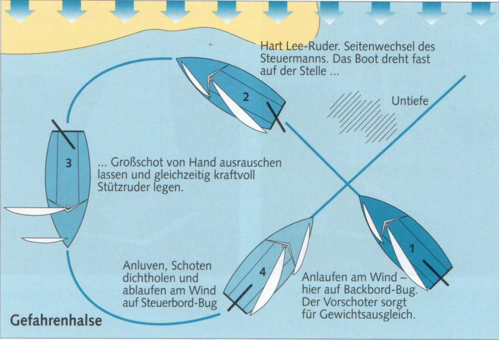
|
Таблица команд — аварийный поворот фордевинд (Kommandotafel Gefahrenhalse) |
|
К аварийному повороту товсь! (Klar zur Gefahrenhalse!) Есть товсь! (Ist klar!) Через корму! (Rund achtern!) Выбрать шкоты на …-й ветер! (Hol an die Schoten ...Wind!) |
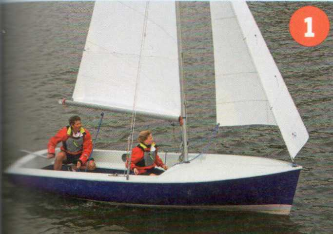
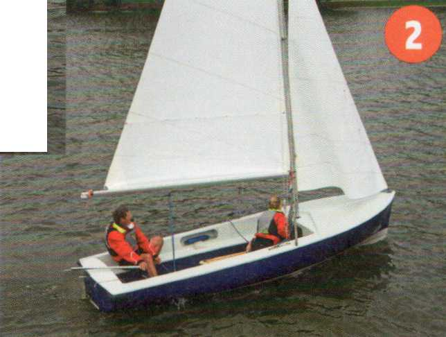
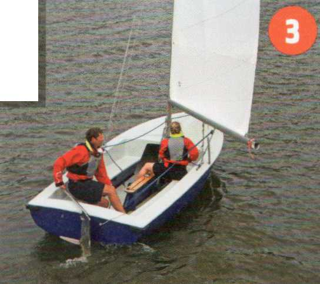
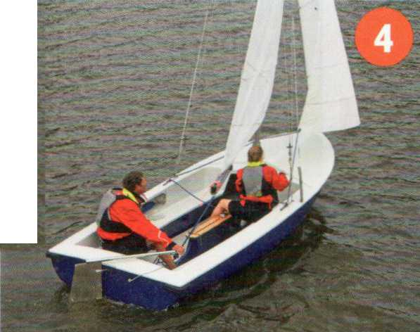